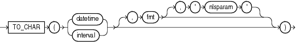

占位符占位符占位符占位符占位符
占位符占位符占位符占位符占位符
占位符占位符占位符占位符占位符
表格中包含了Oracle21版本以前的常用函数
| 函数名称 | 所属类别 | 描述 | 被加入 | 被丢弃 |
|---|---|---|---|---|
| ABS() | 数值函数 | 返回其绝对值 | 所有版本 | |
| CEIL() | 数值函数 | 返回大于等于n的最小整数 | 所有版本 | |
| FLOOR() | 数值函数 | 返回返回等于或小于n的最大整数。 | 所有版本 | |
| ROUND(number) | 数值函数 | 返回n四舍五入后的值（注：传入参数为number类型） | 所有版本 | |
| TRUNC(number) | 数值函数 | 返回n截断后的值（注：传入参数为number类型） | 所有版本 | |
| CONCAT() | 字符函数 | 拼接字符串 | 所有版本 | |
| INITCAP() | 字符函数 | 返回每个单词首字母大写 | 所有版本 | |
| LOWER() | 字符函数 | 返回字符 所有字母小写 | 所有版本 | |
| REPLACE() | 字符函数 | 替换字符串 | 所有版本 | |
| SUBSTR() | 字符函数 | 返回字符串的一部分 | 所有版本 | |
| TRIM() | 字符函数 | 删除字符串前后的空格 | 所有版本 | |
| UPPER() | 字符函数 | 返回字符串 所有字母大写 | 所有版本 | |
| LENGTH() | 字符函数 | 返回字符串长度 | 所有版本 | |
| ADD_MONTHS() | 时间函数 | 增加指定月份 | 所有版本 | |
| CURRENT_DATE() | 时间函数 | 返回会话当前时间 | 所有版本 | |
| LAST_DAY() | 时间函数 | 返回当月最后一天 | 所有版本 | |
| MONTHS_BETWEEN() | 时间函数 | 返回日期相差月份 | 所有版本 | |
| ROUND(date) | 时间函数 | 对日期按指定格式四舍五入 | 所有版本 | |
| SYSDATE() | 时间函数 | 返回服务器当前时间 | 所有版本 | |
| TO_CHAR(datetime) | 时间函数 | 对日期按指定格式转换为字符串 | 所有版本 | |
| TRUNC(date) | 时间函数 | 对日期按指定格式截断 | 所有版本 | |
| CAST() | 转换函数 | 一个数据类型转换为另一个数据类型 | 所有版本 | |
| TO_DATE() | 转换函数 | char转换为DATE数据类 | 所有版本 | |
| TO_NUMBER() | 转换函数 | 转换为NUMBER数据类型 | 所有版本 | |
| COALESCE() | NULL相关函数 | 返回表达式列表中的第一个非空参数 | 所有版本 | |
| LNNVL() | NULL相关函数 | 条件为FALSE或UNKNOWN则返回TRUE, 条件为TRUE则返回FALSE | 所有版本 | |
| NULLIF() | NULL相关函数 | 参数熄灯则函数返回null, 不等返回expr1。 | 所有版本 | |
| NVL() | NULL相关函数 | 如果expr1为空返回expr2; 如果expr1不为空返回expr1。 | 所有版本 | |
| NVL2() | NULL相关函数 | NVL加强版, 接收三个参数 | 所有版本 | |
| ANY_VALUE() | 聚合函数 | 返回expr的一个不确定值, 常用作聚合函数。 | 19c | |
| AVG() | 聚合函数 | AVG返回expr的平均值。 | 所有版本 | |
| COUNT() | 聚合函数 | COUNT返回查询返回的行数。 | 所有版本 | |
| MAX() | 聚合函数 | MAX返回expr的最大值。 | 所有版本 | |
| MIN() | 聚合函数 | MAX返回expr的最小值。 | 所有版本 | |
| RANK() | 聚合函数 | RANK计算一个值在一组值中的排名。 | 所有版本 | |
| SUM() | 聚合函数 | SUM返回expr值的和。 | 所有版本 |
表格中包含了Oracle常用的数值函数
| 函数名称 | 所属类别 | 描述 | 被加入 | 被丢弃 |
|---|---|---|---|---|
| ABS() | 数值函数 | 返回其绝对值 | 所有版本 | |
| CEIL() | 数值函数 | 返回大于等于n的最小整数 | 所有版本 | |
| FLOOR() | 数值函数 | 返回返回等于或小于n的最大整数。 | 所有版本 | |
| ROUND(number) | 数值函数 | 返回n四舍五入后的值（注：传入参数为number类型） | 所有版本 | |
| TRUNC(number) | 数值函数 | 返回n截断后的值（注：传入参数为number类型） | 所有版本 |
ABS
语法
作用
ABS返回n的绝对值。
此函数接受可隐式转换为数字数据类型的任何数字数据类型或任何非数字数据类型作为参数。该函数返回与参数的数字数据类型相同的数据类型。
示例
下面的例子返回-15的绝对值:
SELECT ABS(-15) AS "Absolute"
FROM DUAL;
Absolute
------------
15
CEIL
语法
作用
CEIL返回大于等于n的最小整数。
当且仅当n恰好是整数时，CEIL的值就是n本身。
此函数接受可隐式转换为数字数据类型的任何数字数据类型或任何非数字数据类型作为参数。该函数返回与参数的数字数据类型相同的数据类型。
示例
以下示例返回大于或等于指定订单的订单总数的最小整数
SELECT order_total, CEIL(order_total)
FROM orders
WHERE order_id = 2434;
ORDER_TOTAL CEIL(ORDER_TOTAL)
----------- -----------------
268651.8 268652
FLOOR
语法
作用
FLOOR返回等于或小于n的最大整数。
当且仅当n恰好是整数时，FLOOR的值就是n本身。
此函数接受可隐式转换为数字数据类型的任何数字数据类型或任何非数字数据类型作为参数。该函数返回与参数的数字数据类型相同的数据类型。
示例
下面的例子返回等于或小于15.7的最大整数:
SELECT FLOOR(15.7) AS "Floor"
FROM DUAL;
Floor
----------
15
ROUND(number)
语法
作用
ROUND返回小数点右边四舍五入到integer的n。
如果省略integer，则函数返回ROUND(n, 0)的值，即n会四舍五入到0位保留整数。
n可以是任何数值数据类型，也可以是任何可以隐式转换为数值的非数值数据类型。
示例
下面的例子将一个数字四舍五入到小数点后一位:
SELECT ROUND(15.193,1) AS "Round" FROM DUAL;
Round
----------
15.2
TRUNC(number)
语法
作用
TRUNC函数返回截断为n2位的n1。
如果n2被省略，那么n1被截断为0位保留整数。
该函数接受任何数值数据类型或任何可以隐式转换为数值数据类型的非数值数据类型作为参数。如果省略n2，函数返回的数据类型与参数的数值类型相同。如果包含n2，则函数返回NUMBER。
示例
下面的例子对数字进行截断:
SELECT TRUNC(15.79,1) AS "Truncate" FROM DUAL;
Truncate
----------
15.7
表格中包含了Oracle常用的字符函数
| 函数名称 | 所属类别 | 描述 | 被加入 | 被丢弃 |
|---|---|---|---|---|
| CONCAT() | 字符函数 | 拼接字符串 | 所有版本 | |
| INITCAP() | 字符函数 | 返回每个单词首字母大写 | 所有版本 | |
| LOWER() | 字符函数 | 返回字符 所有字母小写 | 所有版本 | |
| REPLACE() | 字符函数 | 替换字符串 | 所有版本 | |
| SUBSTR() | 字符函数 | 返回字符串的一部分 | 所有版本 | |
| TRIM() | 字符函数 | 删除字符串前后的空格 | 所有版本 | |
| UPPER() | 字符函数 | 返回字符串 所有字母大写 | 所有版本 | |
| LENGTH() | 字符函数 | 返回字符串长度 | 所有版本 |
CONCAT
语法
作用
CONCAT返回与char2连接的char1。
换句话说就是将char1和char2拼接起来。
这个函数等价于连接操作符(||)。
比如拼接char1 char2 char3
当拼接的字符串大于3时，可以用||拼接。
比如拼接char1 char2 char3 char4。
示例
下面的例子使用嵌套来连接三个字符串:
SELECT CONCAT(CONCAT(last_name, '''s job category is '), job_id) AS "Job"
FROM employees
WHERE employee_id = 152;
Job
------------------------------------------------------
Hall's job category is SA_REP
INITCAP
语法
作用
INITCAP返回char，其中每个单词的第一个字母为大写，其他所有字母为小写。
示例
下面的示例将字符串中的每个单词大写:
SELECT INITCAP('the soap') AS "Capitals"
FROM DUAL;
Capitals
---------
The Soap
LOWER
语法
作用
LOWER返回char，所有字母都是小写。
示例
下面的例子返回一个小写字符串:
SELECT LOWER('MR. SCOTT MCMILLAN') AS "Lowercase"
FROM DUAL;
Lowercase
--------------------
mr. scott mcmillan
REPLACE
语法
作用
REPLACE返回char，每次出现search_string都用replacement_string替换。
如果replacement_string省略或为空，则删除所有出现的search_string。
如果search_string为空，则返回char。
示例
下面的示例将出现的J替换为BL:
SELECT REPLACE('JACK and JUE','J','BL') AS "Changes"
FROM DUAL;
Changes
--------------
BLACK and BLUE
SUBSTR
语法
作用
SUBSTR函数返回char的一部分，从position开始，substring_length长。
类似于java的subString()方法，区别在于该函数是从1开始，不是从0开始
- 如果position为0，则将其视为1。
- 如果position为正数，则Oracle数据库从char开头开始计数以查找第一个字符。
- 如果position为负，则Oracle从char的末尾开始向后计数。
- 如果省略substring_length，则Oracle直接返回到字符末尾。如果substring_length小于1，那么Oracle返回null。
示例
下面的例子返回"ABCDEFG"的几个指定子字符串:
SELECT SUBSTR('ABCDEFG',3,4) AS "Substring"
FROM DUAL;
Substring
---------
CDEF
SELECT SUBSTR('ABCDEFG',-5,4) AS "Substring"
FROM DUAL;
Substring
---------
CDEF
TRIM
语法
作用
TRIM使您能够从字符串中修剪前导或尾随字符(或两者)。
- 如果指定了LEADING，那么Oracle数据库将删除所有等于trim_character的前导字符。
- 如果指定了TRAILING，那么Oracle将删除所有等于trim_character的尾随字符。
- 如果您指定了BOTH或none，那么Oracle将删除等于trim_character的前后字符。
- 如果不指定trim_character，则默认值是一个空格。
- 如果您只指定trim_source，那么Oracle将删除前导和尾随的空格。
- 如果trim_source或trim_character为空，则TRIM函数返回空。
示例
下面的例子将hr数据库中雇员的雇佣日期前导的0去掉:
SELECT employee_id AS EMPLOYEE_ID,
TO_CHAR(TRIM(LEADING 0 FROM hire_date)) AS DATE
FROM employees
WHERE department_id = 60
ORDER BY employee_id;
EMPLOYEE_ID DATE
----------- ---------
103 20-MAY-08
104 21-MAY-07
105 25-JUN-05
106 5-FEB-06
107 7-FEB-07
UPPER
语法
作用
UPPER返回字符，所有字母都是大写。
示例
下面的例子以大写形式返回每个员工的姓氏:
SELECT UPPER(last_name) AS "Uppercase"
FROM employees;
LENGTH
语法
作用
LENGTH函数返回字符的长度。
示例
下面的例子使用了LENGTH函数:
SELECT LENGTH('CANDIDE') AS "Length in characters"
FROM DUAL;
Length in characters
--------------------
7
表格中包含了Oracle常用的时间函数
| 函数名称 | 所属类别 | 描述 | 被加入 | 被丢弃 |
|---|---|---|---|---|
| ADD_MONTHS() | 时间函数 | 增加指定月份 | 所有版本 | |
| CURRENT_DATE() | 时间函数 | 返回会话当前时间 | 所有版本 | |
| LAST_DAY() | 时间函数 | 返回当月最后一天 | 所有版本 | |
| MONTHS_BETWEEN() | 时间函数 | 返回日期相差月份 | 所有版本 | |
| ROUND(date) | 时间函数 | 对日期按指定格式四舍五入 | 所有版本 | |
| SYSDATE() | 时间函数 | 返回服务器当前时间 | 所有版本 | |
| TO_CHAR(datetime) | 时间函数 | 对日期按指定格式转换为字符串 | 所有版本 | |
| TRUNC(date) | 时间函数 | 对日期按指定格式截断 | 所有版本 |
ADD_MONTHS
语法
作用
ADD_MONTHS返回日期加上整数月份。
date参数可以是datetime值，也可以是任何可以隐式转换为date的值。参数integer可以是整数，也可以是任何可以隐式转换为整数的值。
无论DATE的数据类型是什么，返回类型始终是DATE。
如果date是该月的最后一天，或者结果月份的天数少于date的day成分，则结果为结果月份的最后一天。
示例
下面的例子返回样例表employees中hire_date之后的月份:
SELECT TO_CHAR(ADD_MONTHS(hire_date, 1), 'DD-MON-YYYY') AS "Next month"
FROM employees
WHERE last_name = 'Baer';
Next Month
-----------
07-JUL-2002
CURRENT_DATE
语法
作用
CURRENT_DATE返回会话时区的当前日期，数据类型为date的公历值。
示例
下面的例子说明CURRENT_DATE对会话时区敏感:
ALTER SESSION SET TIME_ZONE = '-5:0';
ALTER SESSION SET NLS_DATE_FORMAT = 'DD-MON-YYYY HH24:MI:SS';
SELECT SESSIONTIMEZONE, CURRENT_DATE FROM DUAL;
SESSIONTIMEZONE CURRENT_DATE
--------------- --------------------
-05:00 29-MAY-2000 13:14:03
ALTER SESSION SET TIME_ZONE = '-8:0';
SELECT SESSIONTIMEZONE, CURRENT_DATE FROM DUAL;
SESSIONTIMEZONE CURRENT_DATE
--------------- --------------------
-08:00 29-MAY-2000 10:14:33
LAST_DAY
语法
作用
LAST_DAY返回包含date的月份的最后一天的日期。
无论DATE的数据类型是什么，返回类型始终是DATE。
示例
下面的语句确定了当月还剩多少天。
SELECT SYSDATE,
LAST_DAY(SYSDATE) AS "Last",
LAST_DAY(SYSDATE) - SYSDATE AS "Days Left"
FROM DUAL;
SYSDATE Last Days Left
--------- --------- ----------
30-MAY-09 31-MAY-09 1
MONTHS_BETWEEN
语法
作用
MONTHS_BETWEEN返回日期date1和date2之间的月份数。
如果date1晚于date2，则结果为正数;如果date1早于date2，则结果为负数。
如果date1和date2要么是当月的同一天，要么都是月末的最后几天，则结果总是整数。
否则，Oracle数据库将根据31天的月计算结果的小数部分。
示例
下面的例子计算两个日期之间的月份:
SELECT MONTHS_BETWEEN
(TO_DATE('02-02-1995','MM-DD-YYYY'),
TO_DATE('01-01-1995','MM-DD-YYYY') ) AS "Months"
FROM DUAL;
Months
----------
1.03225806
ROUND (date)
语法
作用
ROUND返回日期四舍五入为格式模型fmt指定的单位。
即使为DATE指定了不同的datetime数据类型，返回的值也始终是DATE类型。
如果省略fmt，则date会四舍五入到最近的日期。
示例
下面的例子将日期舍入为下一年的第一天:
SELECT ROUND (TO_DATE ('27-OCT-00'),'YYYY') AS "New Year"
FROM DUAL;
New Year
---------
01-JAN-01
SYSDATE
语法
作用
SYSDATE返回数据库服务器所在操作系统的当前日期和时间，该函数不需要参数。
示例
下面的例子返回当前操作系统的日期和时间:
SELECT TO_CHAR
(SYSDATE, 'MM-DD-YYYY HH24:MI:SS') AS "NOW"
FROM DUAL;
NOW
-------------------
04-13-2001 09:45:51
TO_CHAR (datetime)
语法
作用
TO_CHAR (datetime)将日期的datetime或interval值转换为日期格式fmt指定的VARCHAR2数据类型的值。
如果省略fmt, date将被转换为VARCHAR2值，日期值会被转换为默认的日期格式。
fmt格式如下表所示：
| type | fmt | desc |
|---|---|---|
| DAY | DD | Day of month (1-31). |
| DAY | DD | Day of year (1-366). |
| HOUR | HH HH12 |
Hour of day (1-12). |
| HOUR | HH24 | Hour of day (0-23). |
| MINUTE | MI | Minute (0-59). |
| MONTH | MM | Month (01-12; January = 01). |
| SECOND | SS | Second (0-59). |
| YEAR | YYYY | 4-digit year. |
示例
下面的语句确定了当月还剩多少天。
SELECT TO_CHAR
(SYSDATE, 'MM-DD-YYYY HH24:MI:SS') AS "NOW"
FROM DUAL;
NOW
-------------------
04-13-2001 09:45:51
TRUNC (date)
语法
作用
TRUNC (date)函数返回日期，将一天中的时间部分截断为格式模型fmt指定的单位。
即使为DATE指定了不同的datetime数据类型，返回的值也始终是DATE类型。
如果省略fmt，则使用默认的格式模型'DD'，返回的值是日期截断为当天的午夜时间。
示例
下面的语句确定了当月还剩多少天。
SELECT TRUNC(TO_DATE('27-OCT-92','DD-MON-YY'), 'YEAR')
"New Year" FROM DUAL;
New Year
---------
01-JAN-92
表格中包含了Oracle常用的转换函数
| 函数名称 | 所属类别 | 描述 | 被加入 | 被丢弃 |
|---|---|---|---|---|
| CAST() | 转换函数 | 一个数据类型转换为另一个数据类型 | 所有版本 | |
| TO_DATE() | 转换函数 | char转换为DATE数据类 | 所有版本 | |
| TO_NUMBER() | 转换函数 | 转换为NUMBER数据类型 | 所有版本 |
CAST
语法
作用
CAST允许将一种类型的内置数据类型或集合类型的值转换为另一种内置数据类型。
示例
下面的例子将TEXT转换为VARCHAR2:
SELECT product_id, CAST(ad_sourcetext AS VARCHAR2(30)) AS text
FROM print_media
ORDER BY product_id;
TO_DATE
语法
作用
TO_DATE将char转换为DATE数据类型的值。
fmt是指定char格式的日期时间模型格式。如果省略fmt，则char必须采用默认日期格式。
示例
下面的示例将字符串转换为日期:
SELECT TO_DATE(
'January 15, 1989, 11:00 A.M.',
'Month dd, YYYY, HH:MI A.M.') AS date
FROM DUAL;
date
---------
15-JAN-89
TO_NUMBER
语法
作用
TO_NUMBER将expr转换为NUMBER数据类型的值。
如果expr为NUMBER，则该函数返回expr。如果expr的计算结果为null，则该函数返回null。否则，该函数将expr转换为NUMBER值。
示例
以下示例将字符串数据转换为数字:
SELECT TO_NUMBER('2.00') "Value"
FROM DUAL;
Value
---------
2.00
表格中包含了Oracle常用的与NULL相关函数
| 函数名称 | 所属类别 | 描述 | 被加入 | 被丢弃 |
|---|---|---|---|---|
| COALESCE() | NULL相关函数 | 返回表达式列表中的第一个非空参数 | 所有版本 | |
| LNNVL() | NULL相关函数 | 条件为FALSE或UNKNOWN则返回TRUE, 条件为TRUE则返回FALSE | 所有版本 | |
| NULLIF() | NULL相关函数 | 参数熄灯则函数返回null, 不等返回expr1。 | 所有版本 | |
| NVL() | NULL相关函数 | 如果expr1为空返回expr2; 如果expr1不为空返回expr1。 | 所有版本 | |
| NVL2() | NULL相关函数 | NVL加强版, 接收三个参数 | 所有版本 |
NULLIF
语法

作用
NULLIF比较expr1和expr2。如果它们相等，则函数返回null。如果它们不相等，则函数返回expr1。
NULLIF函数在逻辑上等同于下面的CASE表达式:
CASE WHEN expr1 = expr2 THEN NULL ELSE expr1 END
示例
下面的示例从示例数据库hr中选择那些自被雇用以来换过工作的员工，job_history表中的job_id与employees表中的当前job_id不同:
SELECT e.last_name, NULLIF(j.job_id, e.job_id) AS "Old Job ID"
FROM employees e, job_history j
WHERE e.employee_id = j.employee_id
ORDER BY last_name, "Old Job ID";
LAST_NAME Old Job ID
------------------------- ----------
De Haan IT_PROG
Hartstein MK_REP
Kaufling ST_CLERK
Kochhar AC_ACCOUNT
Kochhar AC_MGR
Raphaely ST_CLERK
Taylor SA_MAN
Taylor
Whalen AC_ACCOUNT
Whalen
NVL2
语法

作用
下面的示例显示了一些雇员的收入是由工资加佣金组成，还是仅仅是工资，这取决于雇员的commission_pct列是否为空。
示例
下面的例子将TEXT转换为VARCHAR2:
SELECT last_name, salary,
NVL2(commission_pct, salary + (salary * commission_pct), salary) income
FROM employees
WHERE last_name like 'B%'
ORDER BY last_name;
LAST_NAME SALARY INCOME
------------------------- ---------- ----------
Baer 10000 10000
Baida 2900 2900
Banda 6200 6820
Bates 7300 8395
Bell 4000 4000
Bernstein 9500 11875
Bissot 3300 3300
Bloom 10000 12000
Bull 4100 4100
表格中包含了Oracle常用的聚合函数
| 函数名称 | 所属类别 | 描述 | 被加入 | 被丢弃 |
|---|---|---|---|---|
| ANY_VALUE() | 聚合函数 | 返回expr的一个不确定值, 常用作聚合函数。 | 19c | |
| AVG() | 聚合函数 | AVG返回expr的平均值。 | 所有版本 | |
| COUNT() | 聚合函数 | COUNT返回查询返回的行数。 | 所有版本 | |
| MAX() | 聚合函数 | MAX返回expr的最大值。 | 所有版本 | |
| MIN() | 聚合函数 | MAX返回expr的最小值。 | 所有版本 | |
| RANK() | 聚合函数 | RANK计算一个值在一组值中的排名。 | 所有版本 | |
| SUM() | 聚合函数 | SUM返回expr值的和。 | 所有版本 |
ANY_VALUE
语法
作用
ANY_VALUE返回expr的一个不确定值。你可以将它用作聚合函数。
它确保不会对任何传入行进行比较，并且消除了将每个列指定为GROUP BY子句的一部分的必要性。
因为它不比较值，所以ANY_VALUE返回值的速度比GROUP BY查询中的MIN或MAX更快。
示例
本例在SH数据库的GROUP BY查询中使用ANY_VALUE作为聚合函数:
SELECT c.cust_id, ANY_VALUE(cust_last_name), SUM(amount_sold)
FROM customers c, sales s
WHERE s.cust_id = c.cust_id
GROUP BY c.cust_id;
CUST_ID ANY_VALUE(CUST_LAST_NAME) SUM(AMOUNT_SOLD)
------- -------------------------- ----------------
6950 Sandburg 78
17920 Oliver 3201
66800 Case 2024
37280 Edwards 2256
109850 Lindegreen 757
3910 Oddell 185
84700 Marker 164.4
26380 Remler 118
11600 Oppy 158
23030 Rothrock 533
42780 Zanis 182
...
630 rows selected.
AVG
语法
作用
AVG返回expr的平均值。
示例
下面的示例计算hr数据库中所有员工的平均工资:
SELECT AVG(salary) AS "Average"
FROM employees;
Average
--------------
6461.83178
COUNT
语法
作用
COUNT返回查询返回的行数。
如果指定expr，则COUNT返回expr不为空的行数。
如果指定星号(*)，则此函数返回所有行，包括重复行和空行。COUNT永远不会返回null。
示例
以下示例使用COUNT作为聚合函数:
SELECT COUNT(*) AS "Total"
FROM employees;
Total
----------
107
SELECT COUNT(*) AS "Allstars"
FROM employees
WHERE commission_pct > 0;
Allstars
---------
35
SELECT COUNT(commission_pct) AS "Count"
FROM employees;
Count
----------
35
SELECT COUNT(DISTINCT manager_id) AS "Managers"
FROM employees;
Managers
----------
18
MAX
语法
作用
MAX返回expr的最大值。你可以将它用作聚合函数或分析函数。
示例
下面的示例确定hr中的最高工资:
SELECT MAX(salary) "Maximum"
FROM employees;
Maximum
----------
24000
MIN
语法
作用
MIN返回expr的最小值。
示例
下面的语句返回hr中最早的雇佣日期:
SELECT MIN(hire_date) "Earliest"
FROM employees;
Earliest
---------
13-JAN-01
RANK
语法
作用
RANK计算一个值在一组值中的排名。返回类型是NUMBER。
示例
下面的示例计算示例表hr中假设员工的级别。年薪为15,500美元，佣金为5%的员工:
SELECT RANK(15500, .05) WITHIN GROUP
(ORDER BY salary, commission_pct) "Rank"
FROM employees;
Rank
----------
105
SUM
语法
作用
SUM返回expr值的和。你可以将它用作聚合函数或分析函数。
示例
下面的示例计算示例hr中所有工资的总和:
SELECT SUM(salary) AS "Total"
FROM employees;
Total
----------
691400
表格中包含了MySQL8.0版本以前的常用函数
| 函数名称 | 所属类别 | 描述 | 被加入 | 被丢弃 |
|---|---|---|---|---|
| COALESCE() | 比较函数 | 返回第一个非空参数 | 所有版本 | |
| GREATEST() | 比较函数 | 返回最大的参数 | 所有版本 | |
| INTERVAL() | 比较函数 | 返回小于第一个参数的参数索引 | 所有版本 | |
| ISNULL() | 比较函数 | 测试实参是否为NULL | 所有版本 | |
| LEAST() | 比较函数 | 返回最小的参数 | 所有版本 | |
| STRCMP() | 比较函数 | 比较两个字符串 | 所有版本 | |
| CASE | 流程控制函数 | case操作符 | 所有版本 | |
| IF() | 流程控制函数 | if/else构造 | 所有版本 | |
| IFNULL() | 流程控制函数 | Null if/else构造 | 所有版本 | |
| NULLIF() | 流程控制函数 | 返回NULL 如果 expr1 = expr2 | 所有版本 | |
| CEIL(), CEILING() | 数学函数 | 返回不小于参数的最小整数值 | 所有版本 | |
| FLOOR() | 数学函数 | 返回不大于参数的最大整数值 | 所有版本 | |
| ROUND() | 数学函数 | 对参数进行四舍五入 | 所有版本 | |
| SIGN() | 数学函数 | 返回参数的符号 | 所有版本 | |
| TRUNCATE() | 数学函数 | 截断到指定的小数位数 | 所有版本 | |
| ADDDATE() | 日期时间函数 | 将时间值(间隔)添加到日期值 | 所有版本 | |
| DATE_ADD() | 日期时间函数 | 等价于ADDDATE() | 所有版本 | |
| ADDTIME() | 日期时间函数 | 增加时间 | 所有版本 | |
| CURDATE() | 日期时间函数 | 返回当前日期 | 所有版本 | |
| CURRENT_DATE(), CURRENT_DATE | 日期时间函数 | 等价于CURDATE() | 所有版本 | |
| CURTIME() | 日期时间函数 | 返回当前时间 | 所有版本 | |
| CURRENT_TIME(), CURRENT_TIME | 日期时间函数 | 等价于CURTIME() | 所有版本 | |
| DATE() | 日期时间函数 | 提取date或datetime表达式的日期部分 | 所有版本 | |
| DATE_FORMAT() | 日期时间函数 | 格式化指定日期 | 所有版本 | |
| DATE_SUB() | 日期时间函数 | 从日期中减去时间值(间隔) | 所有版本 | |
| SUBDATE() | 日期时间函数 | 三个参数时等价于DATE_SUB() | 所有版本 | |
| DATEDIFF() | 日期时间函数 | 两个日期相减 | 所有版本 | |
| DAYOFMONTH() | 日期时间函数 | 返回月份中的天数(0 ~ 31) | 所有版本 | |
| DAY() | 日期时间函数 | 等价于DAYOFMONTH() | 所有版本 | |
| DAYOFYEAR() | 日期时间函数 | 返回一年中的哪一天(1-366) | 所有版本 | |
| GET_FORMAT() | 日期时间函数 | 返回一个日期格式字符串 | 所有版本 | |
| HOUR() | 日期时间函数 | 提取小时 | 所有版本 | |
| LAST_DAY() | 日期时间函数 | 返回参数月份的最后一天 | 所有版本 | |
| NOW() | 日期时间函数 | 返回当前日期和时间 | 所有版本 | |
| LOCALTIME(), LOCALTIME | 日期时间函数 | 等价于NOW() | 所有版本 | |
| MAKEDATE() | 日期时间函数 | 从年份和年份中创建一个日期 | 所有版本 | |
| MAKETIME() | 日期时间函数 | 从小时、分钟、秒创建时间 | 所有版本 | |
| MINUTE() | 日期时间函数 | 返回参数中的分钟数 | 所有版本 | |
| MONTH() | 日期时间函数 | 返回参数的月份 | 所有版本 | |
| SECOND() | 日期时间函数 | 返回参数的秒数(0-59) | 所有版本 | |
| STR_TO_DATE() | 日期时间函数 | 将字符串转换为日期 | 所有版本 | |
| SUBTIME() | 日期时间函数 | 减去第二个参数的日期时间 | 所有版本 | |
| SYSDATE() | 日期时间函数 | 返回函数执行的时间 | 所有版本 | |
| TIME() | 日期时间函数 | 提取传递的表达式的时间部分 | 所有版本 | |
| TO_DAYS() | 日期时间函数 | 返回从Year 0到日期参数的天数 | 所有版本 | |
| YEAR() | 日期时间函数 | 返回年份 | 所有版本 | |
| CAST() | 流程控制函数 | 将值强制转换为特定类型 | 所有版本 | |
| CONVERT() | 流程控制函数 | 将值强制转换为特定类型 | 所有版本 | |
| AVG() | 聚合函数 | 返回参数的平均值 | 所有版本 | |
| COUNT() | 聚合函数 | 返回结果行数 | 所有版本 | |
| COUNT(DISTINCT) | 聚合函数 | 返回不同的值的行数 | 所有版本 | |
| MAX() | 聚合函数 | 返回最大值 | 所有版本 | |
| MIN() | 聚合函数 | 返回最小值 | 所有版本 | |
| SUM() | 聚合函数 | 返回和 | 所有版本 | |
| COUNT() | 聚合函数 | 将值强制转换为特定类型 | 所有版本 |
表格中包含了MySQL常用的比较函数
| 函数名称 | 所属类别 | 描述 | 被加入 | 被丢弃 |
|---|---|---|---|---|
| COALESCE() | 比较函数 | 返回第一个非空参数 | 所有版本 | |
| GREATEST() | 比较函数 | 返回最大的参数 | 所有版本 | |
| INTERVAL() | 比较函数 | 返回小于第一个参数的参数索引 | 所有版本 | |
| ISNULL() | 比较函数 | 测试实参是否为NULL | 所有版本 | |
| LEAST() | 比较函数 | 返回最小的参数 | 所有版本 | |
| STRCMP() | 比较函数 | 比较两个字符串 | 所有版本 |
比较运算符有：
= > < >= <= <> !=
这些操作对数字和字符串都有效。字符串会根据需要自动转换为数字，数字会根据需要自动转换为字符串。
-
COALESCE(value, ...)
返回列表中第一个非空值，如果没有非空值则返回NULL。
mysql> SELECT COALESCE(NULL,1); -> 1 mysql> SELECT COALESCE(NULL,NULL,NULL); -> NULL -
GREATEST(value1, value2,...)
有两个或多个参数时，返回最大(最大值)参数。参数的比较规则与LEAST()相同。
如果任何参数为NULL，则GREATEST()返回NULL。
mysql> SELECT GREATEST(2,0); -> 2 mysql> SELECT GREATEST(34.0,3.0,5.0,767.0); -> 767.0 mysql> SELECT GREATEST('B','A','C'); -> 'C' -
INTERVAL(N, N1, N2, N3, ...)
如果N≤N1返回0，如果N≤N2返回1，以此类推，如果N为NULL返回-1。所有参数都被视为整数。
要求N1≤N2≤N3≤…≤Nn，这个函数才能正常工作。这是因为使用了二分查找(非常快)。
mysql> SELECT INTERVAL(23, 1, 15, 17, 30, 44, 200); -> 3 mysql> SELECT INTERVAL(10, 1, 10, 100, 1000); -> 2 mysql> SELECT INTERVAL(22, 23, 30, 44, 200); -> 0 -
ISNULL(expr)
如果expr为NULL，则ISNULL()返回1，否则返回0。
ISNULL()可以代替=来测试一个值是否为NULL。(使用=将值与NULL进行比较总是产生NULL。)
ISNULL()函数和IS NULL几乎等价
mysql> SELECT ISNULL(1+1); -> 0 mysql> SELECT ISNULL(1/0); -> 1 -
LEAST(value1, value2, ...)
有两个或多个参数时，返回最小(值最小)的参数。
mysql> SELECT LEAST(2,0); -> 0 mysql> SELECT LEAST(34.0,3.0,5.0,767.0); -> 3.0 mysql> SELECT LEAST('B','A','C'); -> 'A' -
STRCMP(expr1, expr2)
如果字符串相同，STRCMP()返回0;
如果根据当前排序顺序第一个参数小于第二个参数则返回-1;
如果两个参数都为NULL则返回NULL;
否则返回1。
mysql> SELECT STRCMP('text', 'text2'); -> -1 mysql> SELECT STRCMP('text2', 'text'); -> 1 mysql> SELECT STRCMP('text', 'text'); -> 0
表格中包含了MySQL常用的流程控制函数
| 函数名称 | 所属类别 | 描述 | 被加入 | 被丢弃 |
|---|---|---|---|---|
| CASE | 流程控制函数 | case操作符 | 所有版本 | |
| IF() | 流程控制函数 | if/else构造 | 所有版本 | |
| IFNULL() | 流程控制函数 | Null if/else构造 | 所有版本 | |
| NULLIF() | 流程控制函数 | 返回NULL 如果 expr1 = expr2 | 所有版本 |
-
CASE value WHEN compare_value THEN result [WHEN compare_value THEN result ...] [ELSE result] END
CASE WHEN condition THEN result [WHEN condition THEN result ...] [ELSE result] END第一个CASE语法返回第一个value=compare_value比较为真的结果。
第二种语法返回第一个条件为真时的结果。如果没有比较或条件为真，则返回ELSE后的结果，如果没有ELSE部分则返回NULL。
mysql> SELECT CASE 1 WHEN 1 THEN 'one' -> WHEN 2 THEN 'two' ELSE 'more' END; -> 'one' mysql> SELECT CASE WHEN 1>0 THEN 'true' ELSE 'false' END; -> 'true' mysql> SELECT CASE BINARY 'B' -> WHEN 'a' THEN 1 WHEN 'b' THEN 2 END; -> NULL -
IF(expr1, expr2, expr3)
如果expr1为TRUE (expr1 <> 0且expr1不为NULL)， If()返回expr2。否则，它返回expr3。
如果expr2或expr3中只有一个显式为NULL，则If()函数的结果类型是非NULL表达式的类型。
mysql> SELECT IF(1>2,2,3); -> 3 mysql> SELECT IF(1<2,'yes','no'); -> 'yes' mysql> SELECT IF(STRCMP('test','test1'),'no','yes'); -> 'no' -
IFNULL(expr1, expr2)
如果expr1不是NULL, IFNULL()返回expr1;否则它返回expr2。
mysql> SELECT IFNULL(1,0); -> 1 mysql> SELECT IFNULL(NULL,10); -> 10 mysql> SELECT IFNULL(1/0,10); -> 10 mysql> SELECT IFNULL(1/0,'yes'); -> 'yes' -
NULLIF(expr1, expr2)
如果expr1 = expr2为真，则返回NULL，否则返回expr1。
这与CASE WHEN expr1 = expr2 THEN NULL ELSE expr1 END相同。
mysql> SELECT NULLIF(1,1); -> NULL mysql> SELECT NULLIF(1,2); -> 1
表格中包含了MySQL常用的数学函数
| 函数名称 | 所属类别 | 描述 | 被加入 | 被丢弃 |
|---|---|---|---|---|
| CEIL(), CEILING() | 数学函数 | 返回不小于参数的最小整数值 | 所有版本 | |
| FLOOR() | 数学函数 | 返回不大于参数的最大整数值 | 所有版本 | |
| ROUND() | 数学函数 | 对参数进行四舍五入 | 所有版本 | |
| SIGN() | 数学函数 | 返回参数的符号 | 所有版本 | |
| TRUNCATE() | 数学函数 | 截断到指定的小数位数 | 所有版本 |
-
CEIL(X), CEILING(X)
返回不小于X的最小整数值。如果X为NULL则返回NULL。
CEILING()与CEIL()等价
mysql> SELECT CEIL(1.23); -> 2 mysql> SELECT CEIL(-1.23); -> -1 -
FLOOR(X)
返回不大于X的最大整数值。如果X为NULL则返回NULL。
mysql> SELECT FLOOR(1.23), FLOOR(-1.23); -> 1, -2 -
FLOOR(X)
返回不大于X的最大整数值。如果X为NULL则返回NULL。
mysql> SELECT FLOOR(1.23), FLOOR(-1.23); -> 1, -2 -
ROUND(X), ROUND(X, D)
将参数X舍入到小数点后D位。舍入算法取决于x的数据类型。
如果未指定，D默认为0。
D可以是负数，使值X小数点左边的D位数字变为零。
D的最大绝对值为30;任何超过30(或-30)的数字都会被截断。
如果X或D为NULL，则函数返回NULL。
mysql> SELECT ROUND(-1.23); -> -1 mysql> SELECT ROUND(-1.58); -> -2 mysql> SELECT ROUND(1.58); -> 2 mysql> SELECT ROUND(1.298, 1); -> 1.3 mysql> SELECT ROUND(1.298, 0); -> 1 mysql> SELECT ROUND(23.298, -1); -> 20 mysql> SELECT ROUND(.12345678901234567890123456789012345, 35); -> 0.123456789012345678901234567890 -
SIGN(X)
根据X是负、零还是正，返回参数的符号为-1、0或1。
如果X为NULL则返回NULL。
mysql> SELECT SIGN(-32); -> -1 mysql> SELECT SIGN(0); -> 0 mysql> SELECT SIGN(234); -> 1 -
TRUNCATE(X, D)
返回数字X，截断为小数点后D位。
如果D为0，则结果没有小数点或小数部分。
D可以是负数，使值X小数点左边的D位数字变为零。
如果X或D为NULL，则函数返回NULL。
mysql> SELECT TRUNCATE(1.223,1); -> 1.2 mysql> SELECT TRUNCATE(1.999,1); -> 1.9 mysql> SELECT TRUNCATE(1.999,0); -> 1 mysql> SELECT TRUNCATE(-1.999,1); -> -1.9 mysql> SELECT TRUNCATE(122,-2); -> 100 mysql> SELECT TRUNCATE(10.28*100,0); -> 1028
表格中包含了MySQL常用的日期时间函数
| 函数名称 | 所属类别 | 描述 | 被加入 | 被丢弃 |
|---|---|---|---|---|
| ADDDATE() | 日期时间函数 | 将时间值(间隔)添加到日期值 | 所有版本 | |
| DATE_ADD() | 日期时间函数 | 等价于ADDDATE() | 所有版本 | |
| ADDTIME() | 日期时间函数 | 增加时间 | 所有版本 | |
| CURDATE() | 日期时间函数 | 返回当前日期 | 所有版本 | |
| CURRENT_DATE(), CURRENT_DATE | 日期时间函数 | 等价于CURDATE() | 所有版本 | |
| CURTIME() | 日期时间函数 | 返回当前时间 | 所有版本 | |
| CURRENT_TIME(), CURRENT_TIME | 日期时间函数 | 等价于CURTIME() | 所有版本 | |
| DATE() | 日期时间函数 | 提取date或datetime表达式的日期部分 | 所有版本 | |
| DATE_FORMAT() | 日期时间函数 | 格式化指定日期 | 所有版本 | |
| DATE_SUB() | 日期时间函数 | 从日期中减去时间值(间隔) | 所有版本 | |
| SUBDATE() | 日期时间函数 | 三个参数时等价于DATE_SUB() | 所有版本 | |
| DATEDIFF() | 日期时间函数 | 两个日期相减 | 所有版本 | |
| DAYOFMONTH() | 日期时间函数 | 返回月份中的天数(0 ~ 31) | 所有版本 | |
| DAY() | 日期时间函数 | 等价于DAYOFMONTH() | 所有版本 | |
| DAYOFYEAR() | 日期时间函数 | 返回一年中的哪一天(1-366) | 所有版本 | |
| GET_FORMAT() | 日期时间函数 | 返回一个日期格式字符串 | 所有版本 | |
| HOUR() | 日期时间函数 | 提取小时 | 所有版本 | |
| LAST_DAY() | 日期时间函数 | 返回参数月份的最后一天 | 所有版本 | |
| NOW() | 日期时间函数 | 返回当前日期和时间 | 所有版本 | |
| LOCALTIME(), LOCALTIME | 日期时间函数 | 等价于NOW() | 所有版本 | |
| MAKEDATE() | 日期时间函数 | 从年份和年份中创建一个日期 | 所有版本 | |
| MAKETIME() | 日期时间函数 | 从小时、分钟、秒创建时间 | 所有版本 | |
| MINUTE() | 日期时间函数 | 返回参数中的分钟数 | 所有版本 | |
| MONTH() | 日期时间函数 | 返回参数的月份 | 所有版本 | |
| SECOND() | 日期时间函数 | 返回参数的秒数(0-59) | 所有版本 | |
| STR_TO_DATE() | 日期时间函数 | 将字符串转换为日期 | 所有版本 | |
| SUBTIME() | 日期时间函数 | 减去第二个参数的日期时间 | 所有版本 | |
| SYSDATE() | 日期时间函数 | 返回函数执行的时间 | 所有版本 | |
| TIME() | 日期时间函数 | 提取传递的表达式的时间部分 | 所有版本 | |
| TO_DAYS() | 日期时间函数 | 返回从Year 0到日期参数的天数 | 所有版本 | |
| YEAR() | 日期时间函数 | 返回年份 | 所有版本 |
-
ADDDATE(date, INTERVAL expr unit), ADDDATE(date, days)
当使用第二个参数的INTERVAL形式调用时，ADDDATE()是DATE_ADD()的同义词。
如果date或days为NULL，则此函数返回NULL。
相关函数SUBDATE()等价于DATE_SUB()。
有关INTERVAL单位参数的信息，请参见下表：
unit值 expr格式 MICROSECOND MICROSECONDS SECOND SECONDS MINUTE MINUTES HOUR HOURS DAY DAYS WEEK WEEKS MONTH MONTHS QUARTER QUARTERS YEAR YEARS mysql> SELECT DATE_ADD('2008-01-02', INTERVAL 31 DAY); -> '2008-02-02' mysql> SELECT ADDDATE('2008-01-02', INTERVAL 31 DAY); -> '2008-02-02'当使用第二个参数的days形式调用时，MySQL将其视为要添加到expr中的天数的整数。
mysql> SELECT ADDDATE('2008-01-02', 31); -> '2008-02-02'推荐！ 使用ADDDATE()函数而不是DATE_ADD()函数，因为当unit为DAY时可以使用其简便写法ADDDATE(date, days)
表格中包含了MySQL常用的转换函数
| 函数名称 | 所属类别 | 描述 | 被加入 | 被丢弃 |
|---|---|---|---|---|
| CAST() | 流程控制函数 | 将值强制转换为特定类型 | 所有版本 | |
| CONVERT() | 流程控制函数 | 将值强制转换为特定类型 | 所有版本 |
表格中包含了MySQL常用的聚合函数
| 函数名称 | 所属类别 | 描述 | 被加入 | 被丢弃 |
|---|---|---|---|---|
| AVG() | 聚合函数 | 返回参数的平均值 | 所有版本 | |
| COUNT() | 聚合函数 | 返回结果行数 | 所有版本 | |
| COUNT(DISTINCT) | 聚合函数 | 返回不同的值的行数 | 所有版本 | |
| MAX() | 聚合函数 | 返回最大值 | 所有版本 | |
| MIN() | 聚合函数 | 返回最小值 | 所有版本 | |
| SUM() | 聚合函数 | 返回和 | 所有版本 | |
| COUNT() | 聚合函数 | 将值强制转换为特定类型 | 所有版本 |
表格中包含了MySQL常用的其它函数
| 函数名称 | 所属类别 | 描述 | 被加入 | 被丢弃 |
|---|---|---|---|---|
| ANY_VALUE() | 流程控制函数 | 抑制ONLY_FULL_GROUP_BY值的拒绝 | 所有版本 | |
| CONVERT() | 流程控制函数 | 将值强制转换为特定类型 | 所有版本 |
表格中包含了Oracle和MySQL函数差异
| 函数名称 | 所属类别 | 描述 | 被加入 | 被丢弃 |
|---|---|---|---|---|
| ANY_VALUE() | 流程控制函数 | 抑制ONLY_FULL_GROUP_BY值的拒绝 | 所有版本 | |
| CONVERT() | 流程控制函数 | 将值强制转换为特定类型 | 所有版本 |